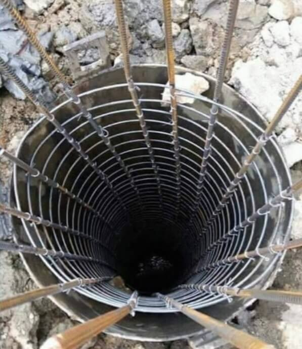

Layanan Kami
Kami menyediakan jasa pondasi untuk kebutuhan konstruksi Anda

Detail Borepile
Klik untuk melihat spesifikasi teknis lengkap
Jasa Borepile
Borepile adalah pondasi dalam yang dibuat dengan metode pengeboran menggunakan mesin khusus. Pondasi ini cocok untuk proyek sedang hingga besar saat kondisi tanah lunak dengan kedalaman mencapai 30m dan diameter 30cm sampai 100cm.
- Kedalaman hingga 30 meter
- Diameter 30cm, 40cm, 50cm, 60cm, 70cm, 80cm, 90cm, 100cm
- Cocok untuk tanah lunak dan proyek sedang hingga besar
- Minim getaran dan dampak lingkungan
- Kapasitas beban tinggi
Spesifikasi Teknis:
Diameter: 30-100cm
Kedalaman: hingga 30m
Beban: 50-200 ton
Waktu: 1-3 titik/hari

Detail Strauss Pile
Klik untuk melihat spesifikasi teknis lengkap
Jasa Strauss Pile
Strauss pile adalah pondasi dalam yang dibuat secara manual dengan sistem bor tangan yaitu menggunakan tenaga manusia. Pondasi ini cocok untuk proyek kecil hingga menengah dengan kedalaman hingga 10 meter dan diameter 20cm-40cm.
- Kedalaman hingga 10 meter
- Diameter 20cm, 30cm, 40cm
- Cocok untuk area sempit dan terbatas
- Biaya lebih ekonomis untuk proyek kecil
- Getaran hampir tidak ada, minim dampak lingkungan
Spesifikasi Teknis:
Diameter: 20-40cm
Kedalaman: hingga 10m
Beban: 10-30 ton
Waktu: 1-3 titik/hari


{kind=link}
{kind=link}